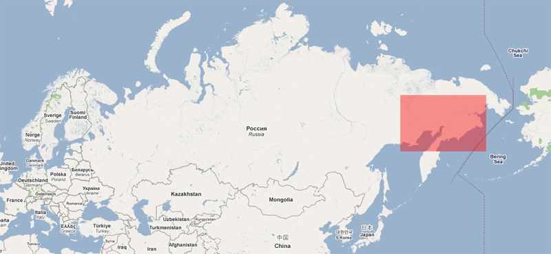
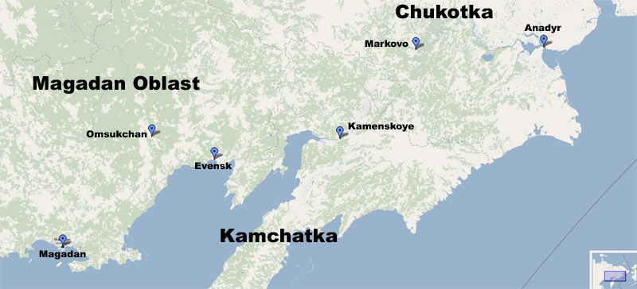

Gdzie, Wizy i inne
2009.Gdzie?
2009.Wizy, papiery, pozwolenia
2007.Gdzie?
2007.Wizy, papiery, pozwolenia
MotoSyberia Reaktywacja 2009
2009.Gdzie?
Celem tegorocznej wycieczki jest przejazd na motocyklach z Magadanu na Czukotk zachaczajc o pnocn Kamczatk. Mamy rwnie cel naukowy: badanie wpywu bota na cer samca rednio-owosionego. Projekt jest dotowany przez Uni Europejsk.
Zaczynamy tam gdzie skoczya si MotoSyberia 2007, czyli teletransportujemy si w icie szataski sposb z caym sprztem do Magadanu.
Pierwsz czsci teletransportu zajmie si Wojtas (z MotoAfryki), a drug ju sam szatan, bo to nie pojte aby taka ilo elastwa od tak poderwaa si nagle w powietrze. Po wyldowaniu w Magadanie udajemy si prosto do Chiskiej knajpy, gdzie mona zje icie cudn wink w sosie sodko-kwanym.

Dalej prujemy do Omsukchan, chocia fajnie byoby zaatwi jak lawet, eby nie traci kostek i spokojnie strawi sodko-kwan wink.
W tych rejonach latem robi si piekielnie i nie ma adnego ruchu ldem. Bagna, rzeki, przesympatyczne komarki i niedwiedzie. Zim te jest tu spokojnie. Cay ruch na Czukotk odbywa si zimnikiem po Koymie i dalej pnocn czci Czukotki, a nie przygotowuje si zimnikw prowadzcych tdy na Kamczatk.
Bdziemy chcieli zachaczy o 2 wioski: Evensk i Kamenskoye. Wioski te maj kontakt ze wiatem drog morsk i drog powietrzn. Do 2007 amerykanie budowali co roku zimnik z Omsukchan (kier. pnocno-wschodni) do kopalni zota. Stamtd mona byo dosta si do Evenska.
Udao mi si skontaktowa ze specami tego regionu (myliwi, kierowcy jedcy zim do kopalni Kubaka) i kada taka rozmowa koczy si smutnym stwierdzeniem "Malciki, nie macie szans dojecha nawet do Evenska". Znalazem na to sposb: przesta kontaktowa si z tubylcami. Unika tego draliwego tematu. Alleluja i do przodu!
Plan minimum: Omsukchan - Evensk
Evensk wydaje si tak blisko, e musimy tu dotrze. Moe by nawet z buta z moto na plecach.
Plan orgazm 1: dotrze do pnocnej Kamczatki (Koriacki Okrg Autonomiczny)
Odcinek Evensk (a waciwie Gizhiga) - Kamenskoye wydaje si najtrudniejszy z tych wszystkich trudnych odcinkw jakie mamy do przejechania. A i tak bdzie trudniej ni mi si wydawaje. Ile razy? Tego pierwsza dowie si moja Matka drog satelitarn.
Plan wielokrotny orgazm: A) dotrze do Czukotki, B) ewentualnie na poudnie Kamczatki
Nasze problemy na lato 2009 to:
- bagna (to jest fuj fuj i nawet nie chce o tym myle)
- rzeki, but I mean RZEKI; kombinujemy w tej sprawie; mamy par pomysw: Grzesiek chtnie zgosi swojego KATa do Big Water Tests;
- paliwo - jak by nie liczy za mao; Grzesiek jest chtny aby ewentualnie skoczy z buta do Evenska lub Kamenskoye i donie; wogle chopak jest strasznie napalony;
- jedzenie - jak by nie liczy za mao; a kocham jedzenie nad wszystkie szataskie pokusy; wieziemy ze sob suche arcie no i moe uda si jak rybk w kocu zowi;
- niedwiedzie - co? a kysz niedwiady! psss...

Mamy jeszcze klika planw awaryjnych. Jedno jest pewne. Bdzie boto, boto, boto, boto, boto, boto, boto, boto wymieszane z samczym cuchncy potem.
Ta oglna niewiadoma tego co nas czeka jest bardzo bardzo, a nawet BARDZO podniecajca.
2009.Wizy, papiery, pozwolenia
Tym razem nie byo za duo papierkowej roboty. Potrzebujemy tylko 3 miesiczn wiz do Rosji i pozwolenie na wjazd na Czukotk. Bdzie tylko troch zabawy z organizowaniem caego transportu.
MotoSyberia 2007
2007.Gdzie?
Ekipa Enduro Nie Penia® rusza na kolejn ekscytujc wypraw:)
W kocu kierunek Magadan, a jak Matuszka Rasija bdzie askawa to nawet ciut ciut dalsze.
Dawno dawno temu po obejrzeniu filmu "Mondo Enduro/Syberia" i przeczytaniu "Przez Syberi na gap" Koperskiego wiedziaem, e musz tam pojecha.
Najpierw jedziemy przez Ukrain do naszych znajomych w Gruzji (motoenduro.pl/gruzja) skosztowa wina po zeszorocznych zbiorach. Poszwendamy si po okolicy (Armenia, Azerbejdan) w poszukiwaniu Arki Noego. Jedzc kanapki z kawiorem i pijc szampanskoje popyniemy przez Morze Kaspijskie do Azji Centralnej. Wskakujemy na jedwabny szlak i jedziemy do Turkmenistanu, Uzbekistanu, Tadykistanu, Kirgistanu i najwikszego eksportera potasu na wiecie - Kazachstanu. Poszukamy troch bota w Mongolii, tym razem pnocnej (motoenduro.pl/mongolia). Bota nigdy za wiele, wic jedziemy dalej na Syberi i sprbujemy dojecha przez Jakuck i Magadan na koniec wiata - na Czukotk.
Ruszamy w czerwcu 2007 i czeka nas jakie 3-4 miechy "cikiej pracy";)
Jedziemy na piknych pomaraczowych KTM-ach 640 Adventure.
Trase mona podzieli na 3 logiczne odcinki:
-turystyczna z Odessy do Kazachstanu
-offroadowa przez Mongolie i wschodni Rosj do Magadanu
-wyprawowo-sportowo-offroadowa z Magadanu do Anadyru

2007.Wizy, papiery, pozwolenia...
Ukraina - nie nada
Gruzja - nie nada
Armenia - wiza na granicy
Azerbejdzan - wiza turystyczna w ambasadzie w W-wie; chodza ploty ze lepiej miec wize tranzytowa,
bo z turystyczna trzeba placic jakas kaucje za moto; ale do Turkmenistanu potrzebujemy tranzytowa, wiec jednak bierzemy tourist; will see; kurier IN, osobiscie OUT;
Turkmenistan - bez biura/ochrony przejazd tylko z wiza tranzytowa; ambasada Moskwa/Berlin (w Moskwie b. ciezko; nam sie nie udalo, za to w Berlinie bez problemow; czas oczekiwania 10-14 dni);
Uzbekistan - potrzebne LOI; ambasada w W-wie; niby tylko osobiscie IN/OUT, ale da rade przez stud-tour
Tadzykistan - potrzebne LOI; ambasada w Moskwie;
Kirgistan - nie nada;
Kazachstan - potrzebne LOI; ambasada w Warszawie; osobiscie;
Mongolia - ambasada w Warszawie; kurier;
Rosja - TODO wielokrotna;
Czukocki Okrg Autonomiczny - pozwolenie na wjazd na Czukotke przez uprawnione biuro podrozy; trwa to ~6 miesiecy; polecam:
DIANA CLUB - mozna tutaj zalatwic pozwolenie na wjazd na Czukotke; Firma zajmuje sie tez organizowaniem polowan na Czukotce. Bardzo sympatyczni i pomocni ludzie. Specjalisci od wszystkiego co zwiazane z Czukotka i niedzwiedziami.

Koriacki Okrg Autonomiczny - nie nada;
|